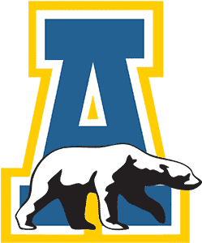

Independents

AlaskaAlaska is 2-7-0 and 41st in the NPI. Across 500 simulated seasons its median NPI finish is 43rd, with a 95% range of 20th to 60th. ELO expects about 5 wins in the next 10.
Next 10 games
- Sat, Nov 7
 at Stonehill49%
at Stonehill49% - Fri, Nov 20vs Alaska Anchorage74%
- Sat, Nov 21vs Alaska Anchorage74%
- Fri, Nov 27at Colorado College26%
- Sat, Nov 28at Colorado College26%
- Fri, Dec 4at Alaska Anchorage61%
- Sat, Dec 5at Alaska Anchorage61%
- Fri, Dec 11
 vs Union42%
vs Union42% - Sat, Dec 12vs Union42%
- Fri, Dec 18
 at Augustana24%
at Augustana24%
Win chances from ELO; the dot is stronger the more lopsided the game.
Projected NPI finish
500 simulated seasons, remaining games decided by ELO win chances. Dashed line: median. Shaded: 95% range.